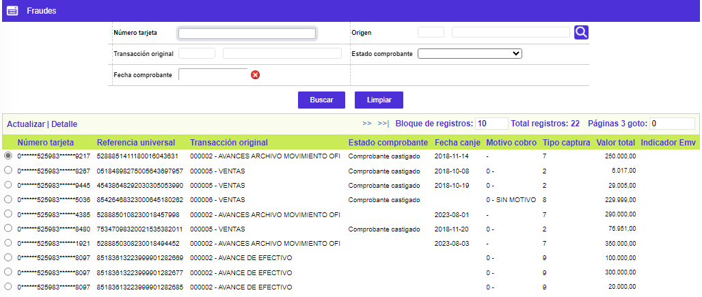
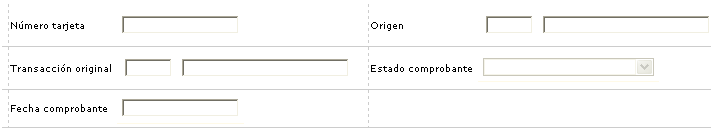
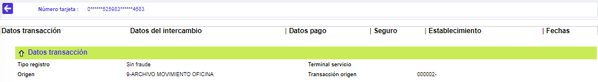
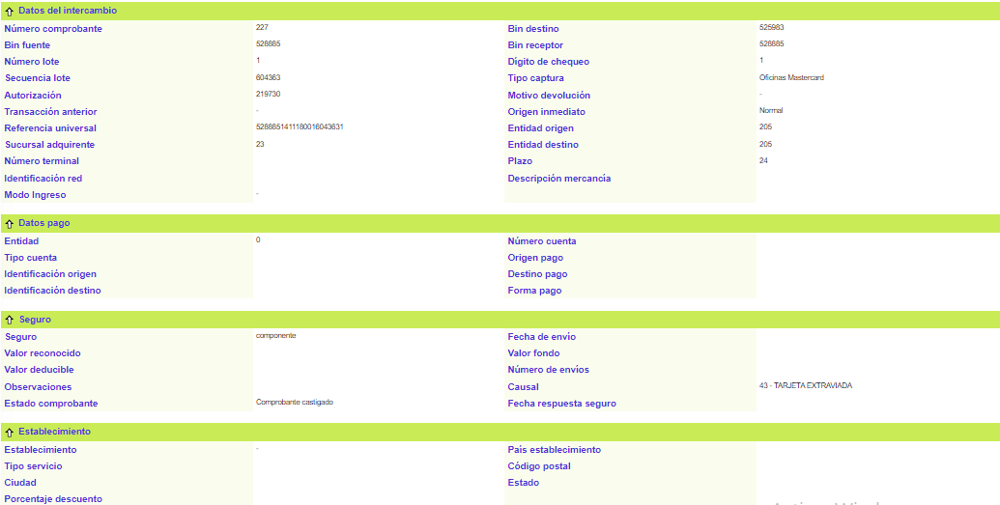
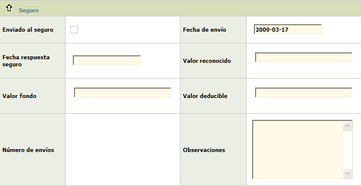
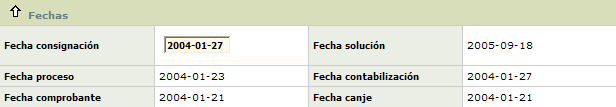
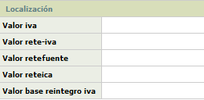

Fraudes |
Mediante esta forma o pantalla se permite la gestión, desde su inicio hasta el final, del proceso mediante el que la entidad interactúa con la compañía de seguros que ampara los fraudes cometidos contra los tarjetahabientes. A esta forma o pantalla arriban las transacciones realizadas con plásticos que han sido reportados como extraviados o hurtados, al igual que transacciones que se encuentran en etapas o instancias tales como movimiento pendiente o efectos al cobro, con el fin de procurar una "solución" a las mismas.
El formulario contiene las opciones Actualizar y Detalle. Adicionalmente cuenta con un filtro de búsqueda.

Filtro: El formulario cuenta con un filtro inicial de búsqueda, necesario para la consulta de la información:

Número tarjeta |
Permite ingresar el número por el cual se desea realizar la búsqueda del fraude. |
Origen |
Campo numérico de 3 dígitos con lista de valores que muestra los orígenes de transacciones definidos por la entidad, tanto externos (franquicias, compensadores), como locales, internacionales, internos. |
Transacción original |
Despliega el código de la transacción a gestionar como fraudulenta, proveniente de otras instancias o etapas dentro del proceso de las transacciones. La codificación es determinada por las franquicias y parametrizada mediante la opción Orígenes de transacciones del grupo de Tablas reservadas del Núcleo. |
Estado comprobante |
Campo que muestra la condición en que se encuentra actualmente el comprobante y que puede ser Contracargos, Cargo al cliente, Pagado por la compañía de seguros, Negado por la compañía de seguros, Comprobante castigado o Enviado a la compañía de seguros. |
Fecha comprobante |
Muestra la fecha física del comprobante de consumo o utilización fraudulento en formato YYYY-MM-AA. |
Actualizar: Si el usuario invoca la opción Actualizar se despliega un nuevo formulario en el cual los únicos campos modificables son: Nombre, Descripción, Rutina, y Motivos de negación.

Tipo registro |
(Pdte documentación) |
Terminal servicio |
En este campo se captura el código de la terminal por la cual llegó la autorización y sobre la cual se desea hacer la consulta. |
Origen |
En este campo el origen por la cual llegó la autorización y sobre la cual se desea hacer la consulta. |
Transacción origen |
Despliega el código de la transacción a gestionar como fraudulenta, proveniente de otras instancias o etapas dentro del proceso de las transacciones. La codificación es determinada por las franquicias y parametrizada mediante la opción Orígenes de transacciones. |
Fecha - Hora transacción |
Muestra la información de la fecha y la hora en la cual se realizó la transacción del fraude. |
Transacción interna |
Muestra el nombre de la transacción interna asociado en la opción Transacciones por empresa. |
Nivel activado TH |
(Pdte documentación) |
Marca |
Muestra la marca de la tarjeta a la cual pertenece la transacción del fraude. |
Elimina flag duplicado |
(Pdte documentación) |
Valor moneda patrón |
Muestra el dato equivalente al valor de la transacción en la moneda patrón del sistema. |
Indicador terminal adquirente |
(Pdte documentación) |
Número tarjeta |
Reseña el número de la tarjeta asociado inicialmente a la transacción. |
Código subfraude |
(Pdte documentación) |
Tarjeta aplicar |
tarjeta que se puede modificar y a la cual se le puede aplicar la trx |
Boleta de ruta |
Corresponde al número consecutivo de los comprobantes de control permitidos por cada oficina en la captura del movimiento, producto de la operación diaria. |
Estado comprobante |
Campo que muestra la condición en que se encuentra actualmente el comprobante y que puede ser Contracargos, Cargo al cliente, Pagado por la compañía de seguros, Negado por la compañía de seguros, Comprobante castigado o Enviado a la compañía de seguros. |
Código respuesta |
Muestra el código de la autorizacion asignada a la transacción del fraude. |
Número paquete |
Indica el número utilizado por las entidades para identificar el orden de ingreso o captura de varios paquetes de movimiento dentro del sistema. |
Código actividad comercial |
Indica el código de la actividad a la cual pertenece el establecimiento en el cual se efectuó la transacción. |
Tipo tarjeta |
Muestra si la transacción fue realizada con tarjeta Principal, Extendida, Amparada, o Adicional. |
Indicador contracargo |
(Pdte documentación) |
Valor moneda local |
Muestra el nombre de la moneda oficial del país al cual pertenece la entidad emisora de la tarjeta. |
Modo entrada POS |
(Pdte documentación) |
Valor compra |
Muestra el monto de la transacción de utilización o consumo sin incluir el monto de la propina concedida por el tarjetahabiente. |
Secuencia recepción |
Número utilizado por las entidades para identificar el orden de ingreso de movimiento de varios orígenes dentro del sistema. |
Valor propina |
Refleja el monto de la propina otorgada por el cliente. |
Secuencia entrada de datos |
(Pdte documentación) |
Valor intercambio |
Muestra el valor neto de la transacción, esto es, valor del consumo o utilización más valor propina, más valor IVA menos valor descuento. |
Código fraude |
(Pdte documentación) |
Valor descuento |
Contiene el valor deducido al establecimiento al liquidarle la comisión o descuento sobre el valor del consumo realizado por el cliente. |
Indicador comercio electrónico |
(Pdte documentación) |
Valor IVA |
Refleja el valor cancelado por el cliente por dicho concepto. |
Elige seguro falsificado |
(Pdte documentación) / nr |
Valor total |
Despliega la sumatoria del valor de la compra más el valor de la propina, más el valor del IVA. |
Indicador presencia TH |
(Pdte documentación) |
Moneda |
Señala el nombre oficial de la moneda en que se efectuó la transacción. |
Indicador CVC inválido |
(Pdte documentación) |
Causal almacenada |
Señala tanto el código como el motivo o razón por el que la transacción fue enviada a fraudes. |
Indicador Emv |
Sigla que hace referencia a Europa, MasterCard y Visa. , corresponde al modo de ingreso de la transacción, tarjetas con chip EMV. |

Número comprobante |
Despliega el número del comprobante, para las transacciones que lo contengan y usualmente equivale al número físico del documento. |
Bin destino |
Señala el prefijo o bin centro de proceso de la entidad emisora del plástico. |
Bin fuente |
Contiene el bin centro de proceso que identifica a una entidad dentro de cada entidad compensadora. |
Bin receptor |
Contiene el prefijo o bin centro de proceso de la entidad a través de la que ingresa la transacción. |
Número lote |
Registra el número asignado al grupo de transacciones similares, con el ánimo de identificarlos físicamente y dentro del sistema. |
Dígito de chequeo |
Contiene el último número que compone la referencia universal, obtenido mediante algoritmos y que permite verificar la validez de dicha referencia. |
Secuencia lote |
Contiene el número consecutivo asignado por el sistema a cada transacción facilitando su identificación dentro del mismo. |
Tipo captura |
Señala el código definido por la franquicia que identifica la manera como ingresó, por medio de su red, la transacción al sistema. |
Autorización |
Muestra el número de la autorización asignado a la transacción por el procesador o la entidad. |
Motivo devolución |
Despliega la descripción del motivo por el cual una transacción es rechazada o devuelta, con base en la definición de motivos hecha por las franquicias. |
Transacción anterior |
(Pdte documentación) / nr |
Origen inmediato |
Aplica para las transacciones que al ingresar al sistema no pasaron directamente al movimiento diario, esto es, que han transitado por otras etapas o destinos del movimiento, y permite identificar la procedencia de las mismas. |
Referencia universal |
Número construido y validado por el sistema tanto para el canje enviado como para el recibido, identifica de manera exclusiva a cada transacción dentro de todo el universo transaccional. |
Entidad origen |
Despliega el nombre de la entidad asociado al bin fuente. |
Sucursal adquirente |
Código que permite identificar la sucursal de la entidad receptora del movimiento. |
Entidad destino |
Corresponde al código de compensación que identifica a la entidad emisora del plástico, dentro del sistema financiero local. |
Número terminal |
Para las transacciones de avance, este campo muestra el número de la terminal ó número de identificación del cajero en el cual se llevó a cabo la transacción. |
Plazo |
Contiene el número de periodos de 30 días, solicitado por el cliente o asignado por defecto, para el pago de la transacción de consumo o utilización. |
Identificación red |
Número que permite detectar a través de cual de las diferentes redes se realizó la transacción. |
Descripción mercancía |
Este campo puede mostrar información relativa al artículo adquirido mediante la transacción considerada fraudulenta, cuando esta mercancía en particular hace parte de una promoción especial. |

Entidad |
Nombre de la entidad financiera asociada a la cuenta. |
Tipo cuenta |
Despliega la clase de cuenta a la cual pertenece el movimiento y que puede ser Corriente, Rotativo o Ahorros. |
Origen pago |
Aplica para los pagos de tarjetas extendidas tales como las empresariales ingresados al sistema mediante la captura de oficinas, despliega por defecto Tarjeta. |
Identificación origen |
Despliega el número de la tarjeta principal o la empresarial bajo la que se encuentra una o más tarjetas extendidas a las que se les aplicará el pago. |
Destino pago |
Si el pago fue dirigido a una Línea, Tarjeta o Transacción, despliega dicho valor. |
Identificación destino |
Contiene el número asociado a la línea de crédito, a la tarjeta o a la transacción hacia la que se dirige el pago. |
Forma pago |
Indica si el pago se realizó en efectivo o en cheque. |
Enviado al seguro |
Campo que al estar señalado indica que la transacción efectivamente fue presentada la reclamación ante la compañía de seguros. |
Fecha envío |
ampo con formato YYYY-MM-DD que muestra la fecha en que se envió a la compañía de seguros la transacción fraudulenta. |
Fecha respuesta seguro |
Campo con formato YYYY-MM-DD que indica la fecha en que la compañía de seguros emitió respuesta a la solicitud presentada. |
Valor reconocido |
Despliega el monto efectivamente cubierto o reconocido por la compañía de seguros para cancelar los saldos vigentes por la transacción que motiva el pago. |
Valor fondo |
Despliega el valor asumido o reconocido por la Entidad, deducido del fondo que ella tiene destinado para los diferentes casos de fraudes. |
Valor deducible |
Contiene el valor deducido al establecimiento al liquidarle la comisión o descuento sobre el valor del consumo realizado por el cliente. |
Número de envíos |
Contiene la cantidad de veces que se ha presentado o enviado la misma transacción ante la compañía de seguros. |
Observaciones |
Campo que contiene la bitácora o descripción de los detalles que ilustran el proceso sufrido por el trámite de reclamación. |

Establecimiento |
Campos que ilustran tanto el código único como el nombre comercial que identifica el establecimiento en que se realizó la transacción. |
Paìs establecimiento |
Muestra la descipcion completa del país donde se ubica el establecimiento en que se realizó la transacción. |
Tipo servicio |
Despliega tanto el código como el nombre del principal servicio ofrecido por el establecimiento de comercio. |
Código postal |
Indica el código de la zona postal del municipio o ciudad donde se ubica el establecimiento. |
Ciudad |
Despliega el nombre del municipio o ciudad donde se ubica el establecimiento en que se realizó la transacción. |
Estado |
Campo que muestra la condición en que se encuentra actualmente el comprobante y que puede ser Contracargos, Cargo al cliente, Pagado por la compañía de seguros, Negado por la compañía de seguros, Comprobante castigado o Enviado a la compañía de seguros. |
Porcentaje descuento |
Reseña el valor del porcentaje aplicado a la compra o consumo fraudulento realizados en ese establecimiento a manera de comisión o descuento. |

Fecha consignación |
Contiene la fecha en formato YYYY-MM-AA en que el establecimiento realizó la consignación del movimiento dentro del que se encuentra la transacción en disputa y aclaración. |
Fecha solución |
Muestra la fecha en formato YYYY-MM-AA en que efectivamente se da una solución definitiva al comprobante. |
Fecha proceso |
Indica la fecha en que fue procesado el movimiento dentro del que aparece la transacción. |
Fecha contabilización |
Contiene la fecha en formato YYYY-MM-AA en la cual se afectó contablemente el saldo del tarjetahabiente, usualmente es la misma fecha de proceso o canje. |
Fecha comprobante |
Muestra la fecha física del comprobante de consumo o utilización fraudulento en formato YYYY-MM-AA. |
Fecha canje |
Señala la fecha en que es reportado el movimiento por medio del archivo de canje, generado desde y hacia las entidades emisoras, mediado éste por el compensador correspondiente. |
Localización: El formulario cuenta con un globo de localización que conduce a la siguiente información:

Valor iva |
Contiene el monto pagado por el cliente por concepto de dicho impuesto, si aplica. |
Valor reteiva |
Campo que despliega el monto retenido por la entidad por este concepto para la transacción en fraude, lo que no aplica para los establecimientos que son autorretenedores. |
Valor retefuente |
Indica el monto descontado o valor en que es disminuida la consignación por concepto de la retención en la fuente liquidada sobre la base de retención calculada para los consumos, lo que no aplica para los establecimientos que son autorretenedores. |
Valor reteica |
Indica el monto descontado o valor en que es disminuida la consignación por concepto de la retención por concepto del impuesto de industria y comercio liquidado sobre la base de retención calculada sobre los consumos, lo que no aplica para los establecimientos que son autorretenedores. |
Valor base reintegro iva |
Este campo despliega el valor que sirve como base para el calculo del reintegro de los 2 puntos de IVA sobre compras y que corresponde al valor de los bienes y/o servicios gravados con una tarifa del 16%; a partir del 2005 también quedarán incluidos aquellos que estén gravados con un IVA del 10%. |
Detalle: Si el usuario invoca la opción Detalle se despliega el siguiente formulario:

Adicionalmente, el formulario cuenta con botones en la parte inferior izquierda, a través de los cuales se pueden tomar acciones de acuerdo a la solución dada a la transacción en fraude.
|
Aplicar movimiento, consiste en cargarle al cliente el comprobante para generar el pago al establecimiento. |
|
Enviar a castigo, una de las formas de finiquitar el proceso de comprobantes fraudulentos, consistente en desistir de su reclamación y afectar las utilidades de la entidad. |
|
Enviar a Contracargos, si es dable iniciar el proceso de intercambio. |
|
Enviado a seguro, una de las etapas dentro de la gestión destinada a obtener el reconocimiento o pago por parte de la compañía de seguros. |
|
Negado por el seguro, ocurre cuando el comprobante no cumple bien sea con los requisitos como con las condiciones para ser pagado. Es posible ajustar la información y presentarla nuevamente. |
|
Pagado por el seguro, ocurre cuando la compañía de seguros determina que el comprobante cumple con los requisitos y condiciones para ser cubierto por la póliza. |